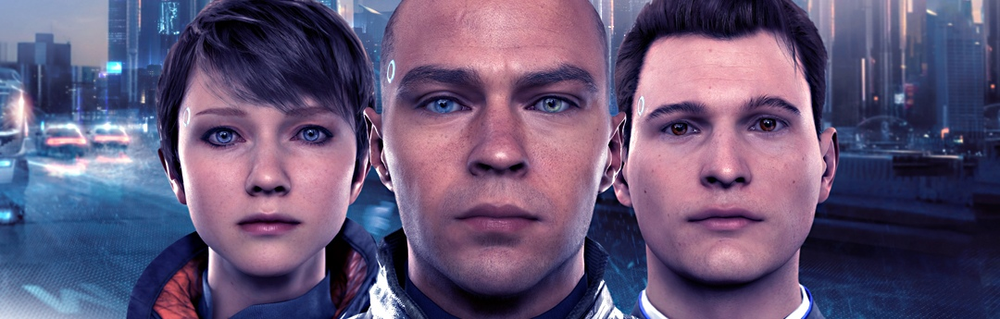
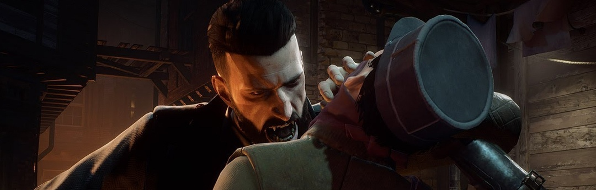
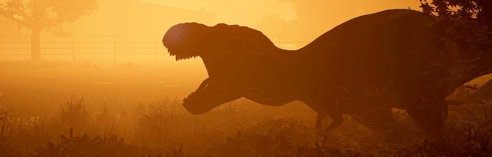
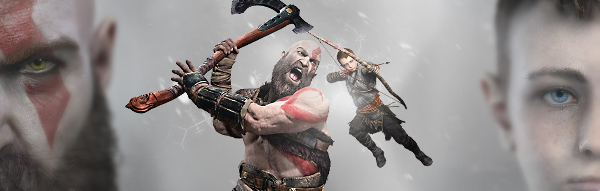
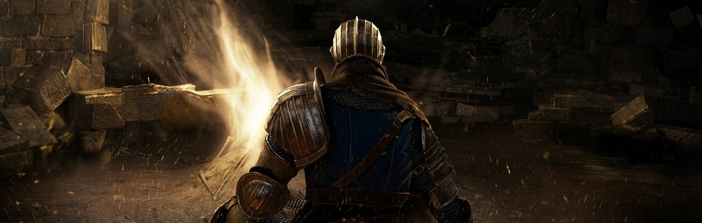

David Cage es uno de los nombres que más dividen. Sus obras bajo el sello Quantic Dream no dejan indiferente a nadie, y con su nuevo videojuego para PS4 busca por fin la unanimidad. ¿Lo habrá logrado? Nuestro análisis de Detroit: Become Human está aquí para que lo decidas tú mismo.

Tras muchos años con sed de juegos de esta temática, Dontnod crea su particular visión del mito vampírico. Una aventura en el Londres de principios del siglo XX asolado por la gripe española y una enfermedad más peligrosa aún: las criaturas de la noche. En este análisis de Vampyr repasamos todas las fortalezas de esta obra tan única y personal.

¿Imaginas tener tu parque de dinosaurios y construirlo a tu gusto y dirigirlo de la mejor manera? ¿Te ves capaz de impedir los accidentes y todo el caos de una "vida que se abre camino"? Te presentamos el análisis de Jurassic World Evolution para que veas si es tan divertido como parece.

Con una promoción sorprendentemente tímida, el equipo de Santa Monica ya no puede seguir ocultando los secretos que guarda la nueva entrega de una de sus franquicias más famosas. En este análisis de God of War, os detallamos, con mucho cuidado y sin desvelar más de la cuenta, la gran experiencia que hemos tenido a los mandos de Kratos y su hijo Atreus. Un viaje lleno de sorpresas.

Uno de los juegos más relevantes de la pasada generación regresa en forma de remasterización, pero no exento de polémica. En este análisis de Dark Souls Remastered te contamos cuáles son la novedades de esta edición, pero también qué elementos podían haber salido mejor.